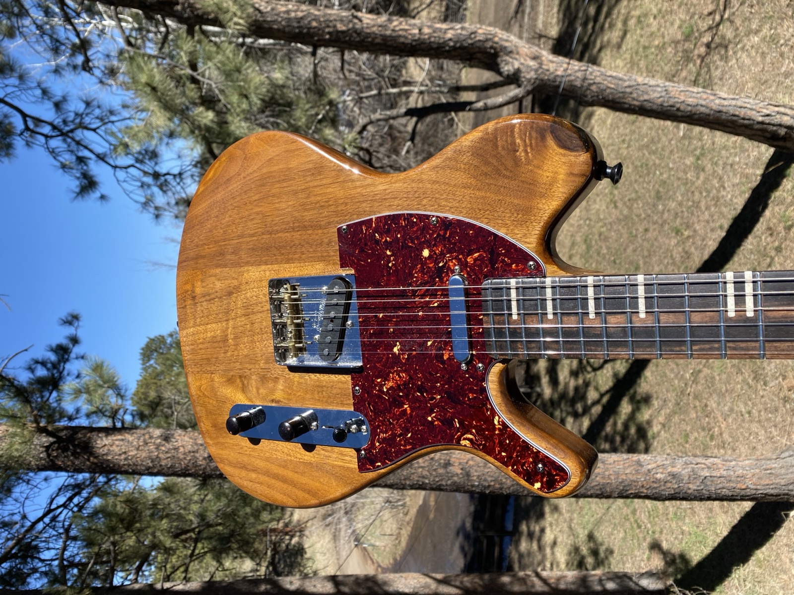
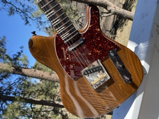

Dorweiler custom build
A classic T-style guitar crafted from walnut with ebony fretboard, combining traditional design with premium tonewoods.
This T-style build showcases the natural beauty of walnut - a tonewood that's often overlooked but offers exceptional resonance and a rich, warm character. The ebony fretboard provides a smooth, fast playing surface with a tight grain structure that enhances note clarity. I kept the design true to the classic T-style template while elevating the material choices beyond what you'd find in production instruments. The natural satin finish lets the walnut's deep brown tones and subtle grain patterns speak for themselves.
Get in touch to find out about the current availability of this instrument.
Get In Touch